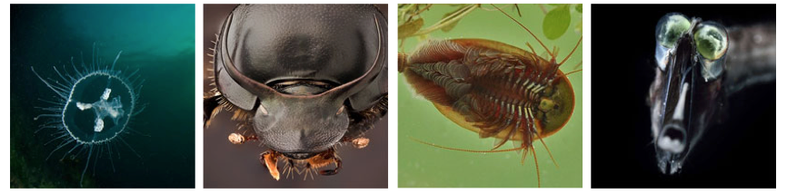

Endogenous flavivirus (EVE) data
We have used GLUE to organise the fossil record of flaviviruses. You can access these data in this repository. This website provides a description of Flaviviridae-GLUE's paleovirus component, and quick links to specific data items.

Relevance to virology
Endogenous viral sequences can inform our understanding of contemporary viruses in a wide variety of ways. Perhaps most importantly, EVEs allow calibration of the long-term evolutionary history of virus groups, which greatly influences how we understand their biology.
Importantly, once time calibrations have been established, a far richer range of comparative genomic studies can be performed. By examining variation in the light of a known evolutionary history, these studies can provide invaluable insights into the biological mechanisms through which viruses replicate and spread.
In some cases, studies of paleoviruses can go a step further - EVE sequences can be used to guide the reconstitution of functional nucleic acids and proteins via gene synthesis, so that their biological properties may be empirically investigated. This in turn, can greatly expand the scope of comparative/theoretical approaches in paleovirology.
Relevance to viral metagenomics
The EFV sequences in Flaviviridae-GLUE can provide a useful resource for those interested in identifying and characterising flaviviruses in metagenomic datasets.
Firstly, these sequences be used to exclude any potential 'false positive' hits (i.e. sequences that seem to represent new flaviviruses but in fact derive from genomic DNA).
In addition, when new flavivirus species are identified, inclusion of EVEs in phylogenetic analyses can often provide useful information about their broader ecology and evolution, including (uniquely) their long-term evolution.
Relevance to genomics
EFVs are not only useful genetic markers, several lines of evidence indicate they may have, or have had, functional roles as host alleles. The prevalence of multicopy EFV lineages in some species suggests that germline incorporation of flavivirus sequences might have influenced the evolution of host genomes in important ways.
Where do the EFV data come from?
EVE sequences were recovered from whole genome sequence (WGS) assemblies via database-integrated genome screening (DIGS) using the DIGS tool.
All data pertaining to this screen are included in this repository, or in the associated "DIGS-for-EVEs" project.
- The complete list of vertebrate genomes screened can be found here.
- The complete list of invertebrate genomes screened can be found here.
- The set of flavivirus polypeptide sequences used as probes can be found here.
- The final set of flavivirus and EFV polypeptide sequences used as references can be found here.
- Input parameters for screening using the DIGS tool can be found here.
Nomenclature for EVEs
We have applied a systematic approach to naming EVE, following a convention developed for endogenous retroviruses. Each element was assigned a unique identifier (ID) constructed from a defined set of components.

The first component is the classifier ‘EFV’ (endogenous flavivirus).
The second component is a composite of two distinct subcomponents separated by a period: (i) the name of EVE group; (ii) a numeric ID that uniquely identifies the insertion. The numeric ID is an integer that identifies a unique insertion locus that arose as a consequence of an initial germline infection. Thus, orthologous copies in different species are given the same number.
The third component of the ID defines the set of host species in which the ortholog occurs.
Raw EVE sequences and data
These are the raw data generated by database-integrated genome screening (DIGS). The tabular files contain information about the genomic location of each EVE. EVEs were classified by comparison to a polypeptide sequence reference library designed to represent the known diversity of flaviviruses - this includes extinct lineages represented only by endogenous viral elements (EVEs).
These data were obtained via DIGS performed in vertebrate genome assemblies downloaded from NCBI genomes (2020-07-15).
Raw data in tabular format are here.
Nucleotide level data in FASTA format (individual files) are here.
Paleovirus-specific schema extensions
The paleovirus component of Flaviviridae-GLUE extends GLUE's core schema to allow the capture of EVE-specific data. These schema extensions are defined in this file and comprise two additional table: 'locus_data' and 'refcon_data'. Both tables are linked to the main 'sequence' table via the 'sequenceID' field.
The 'locus_data' table contains EVE locus information: e.g. species, assembly, scaffold, location coordinates.
The 'refcon_data' table contains summary information for individual EVE insertions. It refers to the reference sequences constructed to represent each insertion, which reflect our best efforts to reconstruct progenitor virus sequences as they might have looked when they initially integrated into the germline of ancestral species.
EVE reference sequences and data
We constructed reference sequences for EVEs using alignments of EVE sequences derived from the same initial germline colonisation event - i.e. orthologous elements in distinct species, and paralogous elements that have arisen via intragenomic duplication of EVE sequences.

Multiple sequence alignments
Multiple sequence alignment constructed in this study are linked together using GLUE's ‘alignment tree’ data structure. Alignments in the project include:
{kind=link}
- A single ‘root’ alignment constructed to represent proposed homologies between representative members of major flavivirus lineages (including extinct lineages represented only by EVEs).
- ‘Genus-level’ alignments constructed to represent proposed homologies between the genomes of representative members of specific flavivirus genera and EVE reference sequences.
- ‘Tip’ alignments in which all taxa are derived from a single EVE lineage.
Phylogenetic trees
We used GLUE to implement an automated process for deriving midpoint rooted, annotated trees from the alignments included in our project.
Trees were constructed at distinct taxonomic levels:
- Recursively populated root phylogeny (Rep)
- Genus-level phylogenies
- EVE lineage-level phylogenies
Related Publications
Singer JB, Thomson EC, McLauchlan J, Hughes J, and RJ Gifford
(2018)
GLUE: A flexible software system for virus sequence data.
BMC Bioinformatics
[view]
Zhu H, Dennis T, Hughes J, and RJ Gifford
(2018)
Database-integrated genome screening (DIGS): exploring genomes heuristically using sequence similarity search tools and a relational database.
[preprint]
Gifford RJ, Blomberg B, Coffin JM, Fan H, Heidmann T, Mayer J, Stoye J, Tristem M, and WE Johnson
(2018)
Nomenclature for endogenous retrovirus (ERV) loci.
Retrovirology
[view]
Katzourakis A. and RJ. Gifford
(2010)
Endogenous viral elements in animal genomes.
PLoS Genetics
[view]